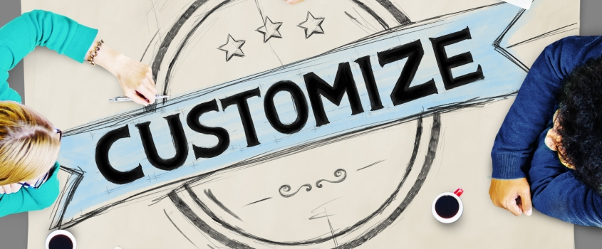
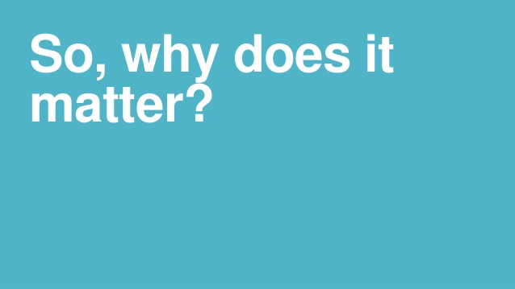

Paper
"My paper"
Online learning, also referred as E-learning, can help the children who learn a different way and need a tailored school plan to get them through education.
The Use of E-Learning will decrease the hours of an adolesence school day
Students that have the ability to decide their own classes and what time they go to them, having an advantage and lead over the students that go to a normal school setting with peers. Being able to choose courses give students a leeway compared to others and they tend to do well Being able to choose courses give students a leeway compared to others and they tend to do well. As the research shows, Adolescents have a harder time functioning in a school setting, E-learning would be a better approach to teaching adolescents.
It will be more cost effective for everyone.
The cost of book and necessities are too high therefore, doing the work at home is more beneficial than going to an actual school. With the cost effective learning it provides a safe haven for people how can not afford normal school. With E-learning becoming more common in people's daily lives, it can make technology can be used all the time.

And it will Allow a customizable curriculum for all students
Instead of a set curriculum that teachers create for a class the students that attend online classes are able to have the class tailored for them because people learn at different paces and need help in different areas.Online learning offers better opportunities to concentrate by not being around other people. You can dedicate one room for quiet study, or if you're shy, you don't have to worry about interacting with other students

E learnig matters because of the illiteracy levels in the united states. 85 percent of juveniles have trouble reading and writing. With online learning used in more US homes Extracurricular activities and learn on their own.Illiteracy has become a social issue because adults who are not proficient in reading and writing are having children who are born and it creates a cycle of people not learning and understanding things.
IF YOU WOULD LIKE TO LEARN MORE ABOUT THIS TOPIC, Feel free to use some of the links provided to further your knowledge on this topic